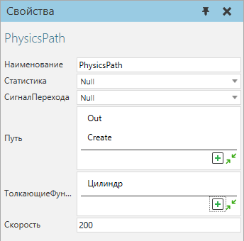
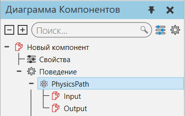

|
Физическая траектория позволяет содержать и перемещать физические объекты по пути, определенному объектами системы координат, в одном направлении.

Порты физической траектории перечислены вместе с поведением на панели Диаграммы Компонентов.

Для узла физической траектории требуется как минимум одно поведение физического объекта. По умолчанию любой элемент с коллайдером в том же компоненте, что и физической траектории, будет применять толкающую силу. Объекты толкаются в направлении пути. Вы можете ограничить толкающую силу, связав один или несколько объектов с путем.
Свойства
Название
|
Описание
|
Наименование
|
Определяет наименование пути.
|
Статистика
|
Определяет поведение статистики, которое собирает статистику, сгенерированную путем.
|
СигналПерехода
|
Определяет поведение логического сигнала, которое сигнализирует о прибытии и уходе физических объектов на пути и с пути. Значение True сигнализирует о прибытии физического объекта. Значение False сигнализирует об уходе физического объекта.
|
Путь
|
Определяет упорядоченный список элементов системы координат в компоненте пути, которые действуют как путевые точки. Последовательность системы координат важна при определении начала и конца пути. Направление пути интерполируется по оси X каждой системы координат.
|
ТолкающиеФункции
|
Определяет список элементов, используемых для блокировки и/или столкновения с физическими объектами на пути. Как правило, это используется для определения того, какие элементы в компоненте действуют как движущая сила пути, например, его лента.
|
Скорость
|
Определяет скорость (мм/с), с которой физические объекты перемещаются по пути.
|
|